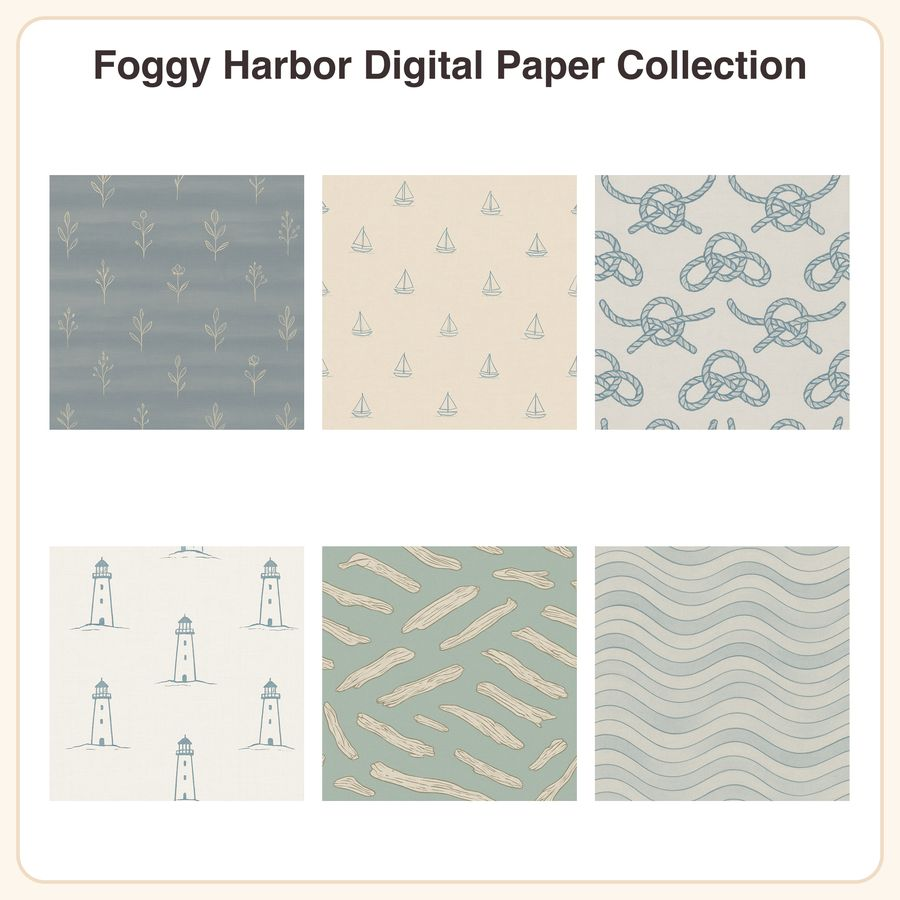

$5.50
View on EtsyMisty coastal mornings, bottled into a paper pack. Foggy Harbor is a set of 6 seamless nautical-inspired patterns in a soft desaturated blue-grey-sand palette with subtle linen texture and calm, minimalist hand-drawn linework — perfect for late-fall journaling, coastal-cottage decor projects, and mixed-media crafts. What's included (12 files total): • 6 seamless patterns as 3072px square JPEGs (12x12in @ 256dpi) — print-ready • 6 matching repeatable PNG tiles (transparent-friendly for digital layering) The 6 designs: 1. Slate-blue fog-bank gradient stripes 2. Tiny hand-drawn sailboats scattered on sand-beige 3. Rope-knot outline pattern, dusty navy on pale grey 4. Minimalist lighthouse silhouettes, soft charcoal on fog-white 5. Driftwood line-art on muted seafoam 6. Gentle graduated wave-line texture in blue-grey tones How to use: Print as scrapbook paper, use as digital backgrounds for planners and social graphics, wrap gift boxes, layer into junk journals, or print onto fabric/vinyl for coastal-cottage decor items. File formats & sizes: JPEG (3072x3072px, 12x12in) + PNG tiles, delivered as a zipped download. No physical item will be shipped. License: Free for personal use and small-business commercial use on physical or digital products up to 500 units sold. Please credit isn't required but always appreciated. You may not resell, redistribute, or share the files themselves in their original or edited digital form. Honest note: These designs were created in our shop with the help of AI image tools, then curated and refined by us into this cohesive collection. 🌫️⚓ Questions before you buy? Just message us — happy to help!